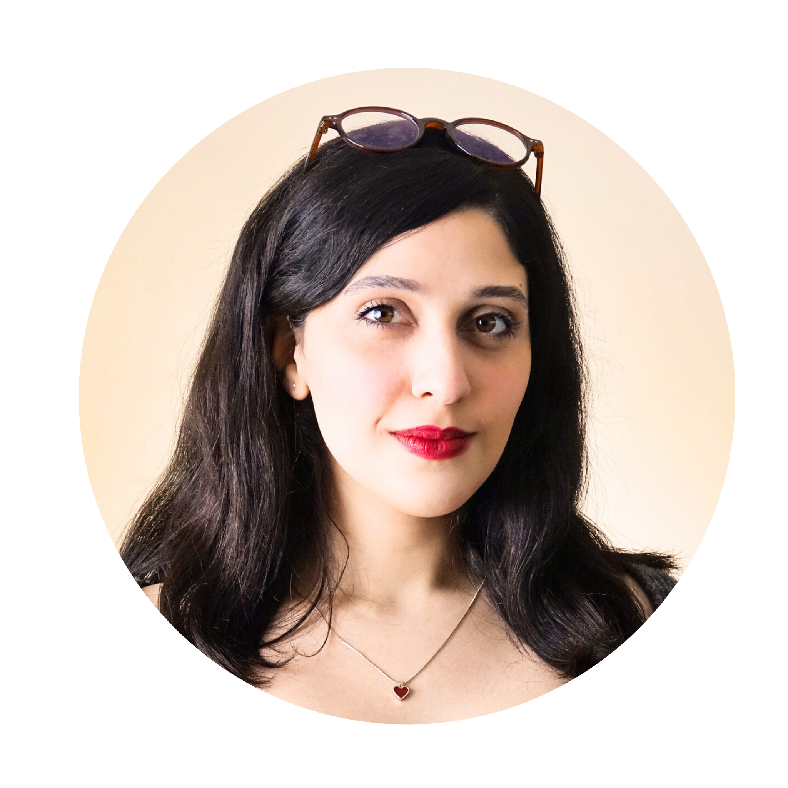

48.0% ER
Community content · Brand storytelling
Academic Year Welcome: celebrating new cohort and alumni milestones
1,275 impressions612 engagements66 reactions
Digital Marketing · Brand Communications · Content Strategy

I am a digital marketing and communications professional with over two and a half years of experience building brand presence, developing content strategies, and driving measurable engagement for organisations at JLU Giessen. I love the full picture of marketing: understanding an audience, shaping a brand voice, producing content that actually connects, and using data to make it better over time. My MA in Anglophone Literatures, Culture and Media gives me a strong foundation in how people communicate and what makes a message land, and being fluent in English, German, and Persian means I can bring that instinct to audiences across markets.
As the sole person responsible for the GCSC's digital marketing and communications, I manage the full cycle from brand strategy to execution. I plan and produce content across LinkedIn and YouTube, build and maintain the visual brand identity, run original content series, cover events, and oversee the organisation's website. The results have consistently outperformed platform benchmarks, with an average engagement rate more than ten times above the LinkedIn average.
A people-first brand series designed to humanise the GCSC and grow its community on LinkedIn. I developed the full concept: the format, visual identity, filming approach, and editorial voice. Running consistently every other week, it became one of the centre's most recognisable content formats.
End-to-end event marketing: on-location photography, post-event content, programme documents, and recap posts. This series showed how consistent event coverage builds brand credibility, with posts averaging above 40% engagement across the board.
HydroCrowd had no active social media presence when I joined. I treated it as a brand launch: defining the visual identity, establishing the tone of voice, building content formats for three platforms, and creating an ongoing editorial strategy. The weekly Friday Flows series turned complex scientific research into content that a general audience could genuinely connect with, and the brand's reach grew through organic resharing by universities and environmental organisations.
A weekly content marketing series translating hydrological research into engaging posts for a non-specialist audience. Each edition was independently researched, written, and designed, covering topics from groundwater and water security to wetlands and climate change. It demonstrated that complex subject matter, handled well, builds a loyal and engaged following.
Developed the full brand identity for HydroCrowd's digital presence from scratch: visual language, colour palette, post templates, tone of voice, and channel-specific content formats across Instagram, Facebook, and X. The consistency of the brand led to organic resharing from partner organisations, extending reach well beyond the existing audience.
I am a digital marketing and communications professional with two and a half years of experience building brand presence, developing content strategies, and delivering measurable results at JLU Giessen. I enjoy the full scope of marketing: from shaping a brand's voice and visual identity to producing multi-channel campaigns and using performance data to refine what works. My LinkedIn content has averaged a 31.3% organic engagement rate with a peak of 48%, in a landscape where 1 to 3% is considered strong.
At the GCSC, I manage the centre's entire digital marketing operation independently. This includes brand strategy, content planning across LinkedIn and YouTube, event marketing, the recurring #MeetUsMonday video series, and maintaining the organisation's website. At HydroCrowd, I led a full brand launch across Instagram, Facebook, and X from the ground up, developing the visual identity, editorial strategy, and a weekly content marketing series that grew the brand's reach through organic partnerships with universities and environmental organisations.
I bring genuine cross-cultural fluency to marketing work, in English (C2), German (C1), and Persian. This means I can think about brand voice, tone, and audience not just in one language but across different cultural contexts, which I believe is a real asset for any organisation communicating with diverse markets.
I would love to bring this experience and energy to your team. I look forward to hearing from you.